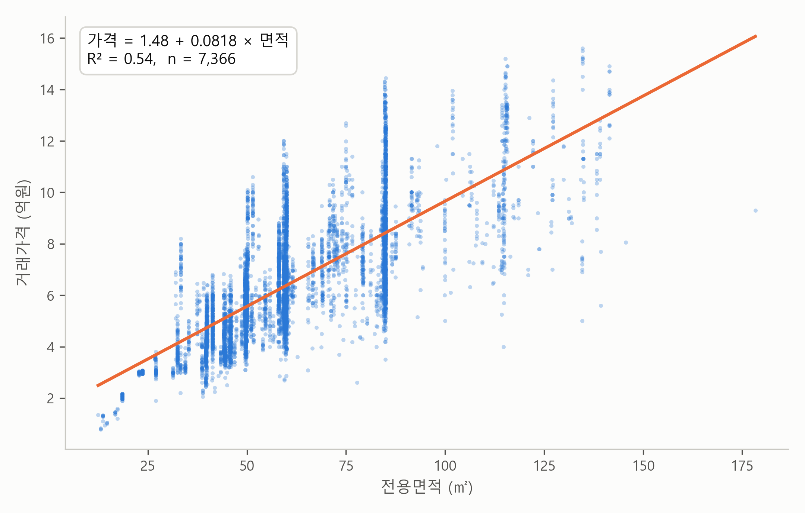

1. 보고서 — 노원구에서 1㎡는 얼마인가#
이번 장의 주제는 회귀분석(regression analysis)입니다. 회귀분석은 변수들 사이의 관계를 분석하는 기법입니다. 아파트의 면적과 가격, 광고비와 매출, 교육 연수와 소득처럼 “하나가 달라지면 다른 하나는 얼마나 달라지는가”를 숫자로 답하죠. 학술 연구의 기본 도구이면서, 가격 책정이나 수요 예측 같은 기업의 전략 결정에도 늘 쓰입니다.
예전에는 이 분석을 직접 배워 직접 돌려야 했습니다. 요즘은 AI에게 데이터를 넣어 주고 분석해 달라고 하면 금방 해줍니다. 우리는 AI가 만들어 준 보고서를 잘 이해하고, 잘 점검하면 됩니다. AI가 해 주는 것, 잘 이해하기. 그게 우리의 일입니다.
데이터 — 서울 아파트 실거래가#
재료는 실제 데이터입니다. 국토교통부 실거래가 공개시스템에서 서울 아파트 매매 1년치(계약일 2025년 10월 ~ 2026년 10월, 2026년 10월 7일 추출)를 CSV로 내려받았습니다. 계약이 취소된 해제거래 2,178건을 걸러내면 66,589건이 남습니다. 이 데이터는 이번 장만이 아니라 여러 변수를 함께 보는 다음 장까지 같이 씁니다. 참고로 이런 수집 자체도 AI에게 부탁할 수 있습니다. 어느 사이트에서 어떤 조건으로 받을지만 정해 주면 됩니다. (공개시스템 자료는 참고용이며, 신고 시점에 따라 수치가 조금 달라질 수 있습니다.)
이번 장은 그 가운데 한 구, 노원구로 좁힙니다. 1년 동안 노원구에서 행해진 아파트 매매는 7,366건입니다. 중위 거래가는 6.1억원이지만, 1억이 안 되는 거래부터 15억이 넘는 거래까지 폭이 넓습니다. 같은 구 안에서 가격이 왜 이렇게 다를까요? 누구나 가장 먼저 떠올리는 요인은 면적입니다. 큰 집이 비싼 것은 상식이죠. 그런데 얼마나 비쌀까요? 노원구에서 전용면적 1㎡는 얼마일까요?
이 질문을 AI에게 맡겨 봤습니다. AI에게 노원구 1년치 매매 기록 파일을 읽게 하고, 전용면적과 거래가격의 관계를 분석한 1쪽 보고서를 요청했습니다. 그렇게 받은 보고서가 아래에 있습니다. 먼저 한 번 읽어 보세요. 모르는 낱말이 나와도 괜찮습니다. 이 장이 하는 일이 바로 이 보고서를 끝까지 읽을 수 있게 만드는 것이니까요.
AI가 만든 1쪽 보고서
노원구에서 1㎡는 얼마인가 — 아파트 실거래가로 본 면적과 가격
분석 대상: 서울 노원구 아파트 매매 실거래 7,366건 (계약일 2025년 10월 ~ 2026년 10월, 해제거래 제외) · 자료: 국토교통부 실거래가 공개시스템
요약
전용면적이 1㎡ 넓을수록 거래가격은 평균 818만원 높다 (95% 신뢰구간 801만~835만원). 평(3.3㎡)으로 환산하면 약 2,700만원이다.
면적 하나로 노원구 아파트 가격 차이의 54%가 설명된다 (\(R^2\) = 0.54).
회귀식 기준 가격은 전용 59㎡ 6.3억원, 84㎡ 8.3억원이다. 실제 중위 거래가는 6.1억원.

그림. 전용면적과 거래가격. 파란 점 하나가 거래 한 건, 주황 직선이 회귀직선이다. 점들이 세로줄처럼 늘어선 곳은 같은 평형(59㎡, 84㎡ 등)이 반복 거래된 자리다.
회귀 결과
거래가격(억원) = 1.48 + 0.0818 × 전용면적(㎡)
추정값 |
표준오차 |
\(t\)값 |
95% 신뢰구간 |
\(p\)값 |
|
|---|---|---|---|---|---|
기울기 (면적 1㎡당, 억원) |
0.0818 |
0.0009 |
93.4 |
0.080 ~ 0.084 |
< 0.001 |
절편 (억원) |
1.48 |
0.06 |
25.5 |
1.37 ~ 1.59 |
< 0.001 |
주: \(n\) = 7,366, \(R^2\) = 0.542, 잔차 표준오차 1.62억원
해석
기울기 — 노원구 안에서 전용면적이 1㎡ 다른 두 아파트는 가격이 평균 818만원 다르다. 이는 노원구 전체 거래에서 나타난 평균적인 관계이고, 개별 아파트에 그대로 적용되는 법칙은 아니다.
불확실성 — 표본이 7천 건이 넘어 기울기는 95% 신뢰구간 기준 ±17만원 범위로 정밀하게 추정됐다. “면적과 가격이 무관하다”(기울기 = 0)는 가능성은 사실상 배제된다 (\(p\) < 0.001).
설명력 — \(R^2\) = 0.54. 가격 차이의 절반가량은 면적만으로 설명되고, 나머지는 단지·층·연식·입지 같은 다른 요인의 몫이다. 같은 면적이라도 실제 가격은 회귀직선에서 평균 ±1.6억원가량 흩어져 있다 (잔차 표준오차).
보조 분석과 한계
로그-로그 사양에서는 탄력성이 0.84 (95% CI 0.82~0.85)다. 면적이 1% 넓으면 가격은 약 0.8% 높다는 뜻으로, 1보다 작으므로 큰 평수일수록 ㎡당 단가는 낮아진다.
이 결과는 상관이지 인과가 아니다. 전용면적은 층, 연식, 단지와 얽혀 있으므로, “다른 조건이 같을 때”의 면적 효과는 다중회귀가 필요하다.
보고서 내려받기: PDF(그림 포함) · 원문(.md)
보고서의 다섯 부분#
보고서는 다섯 부분으로 되어 있습니다. 요약, 그림, 회귀 결과, 해석, 그리고 보조 분석과 한계입니다. 어디에 무엇이 적혀 있는지만 봐 두면, 다음 절부터의 공부가 지도를 들고 하는 여행이 됩니다.
요약은 핵심 발견 세 줄입니다. 첫 줄의 818만원이 이 보고서의 가장 중요한 숫자입니다 — 전용면적이 1㎡ 넓을수록 거래가격은 평균 818만원 높다. 둘째 줄은 면적 하나로 노원구 아파트 가격 차이의 54%가 설명된다는 것, 셋째 줄은 회귀식 기준 가격이 전용 59㎡ 6.3억원, 84㎡ 8.3억원이라는 것입니다.
그림에는 7,366건의 거래가 전부 찍혀 있습니다. 파란 점 하나가 거래 한 건이고, 그 사이를 주황색 회귀직선이 지나갑니다. 점들이 세로줄처럼 늘어선 곳은 59㎡, 84㎡ 같은 인기 평형이 반복해서 거래된 자리입니다. 데이터의 생김새를 읽는 첫 단서죠.
회귀 결과는 이 장의 심장입니다. 맨 위의 식 “거래가격(억원) = 1.48 + 0.0818 × 전용면적(㎡)”은 면적을 넣으면 가격이 나오는 공식이고, 그 아래 표에는 낯선 낱말이 줄지어 있습니다. 추정값, 표준오차, \(t\)값, 95% 신뢰구간, \(p\)값. 지금은 몰라도 됩니다. 다만 하나는 미리 봐 두세요. 기울기 추정값 0.0818은 억원 단위니까 1㎡당 818만원 — 요약의 그 숫자가 여기서 나왔습니다.
해석은 표의 숫자들을 말로 풀어 준 세 문단입니다. 기울기(1㎡의 값), 불확실성(그 값을 얼마나 믿을 수 있나), 설명력(면적이 가격 차이를 얼마나 설명하나).
보조 분석과 한계에는 로그라는 다른 눈금으로 측정한 탄력성 추정값 0.84가 한 줄 있고, 이 결과는 상관이지 인과가 아니라는 단서가 붙어 있습니다. 좋은 보고서는 이렇게 스스로 자기 한계를 밝혀 둡니다.
이 장의 동선#
다음 네 절이 이 보고서를 한 부분씩 읽습니다.
직선은 어떻게 정해지나 — 회귀직선과 기울기 추정값 0.0818이 어디서 왔는지. 잔차와 최소제곱법.
이 기울기를 믿어도 되나 — 표의 나머지 칸들. 표준오차, 95% 신뢰구간, \(t\)값, \(p\)값.
얼마나 설명하나 — \(R^2\) = 0.54와 잔차 표준오차 1.62억원, 그리고 잔차를 그림으로 읽는 법.
로그로 읽는 가격 — 보조 분석의 탄력성 추정값 0.84를 퍼센트로 해석하는 법.
네 절을 지나고 나면 이 보고서의 모든 줄을 읽을 수 있습니다. 그리고 읽을 줄 알게 된 보고서는 여러분의 것이 됩니다. 자기 데이터로 같은 분석을 원할 때 이 보고서를 본보기로 함께 보여 주며 요청하면 되거든요. 그 방법은 이 장 끝의 “직접 해 보기”에서 다룹니다.